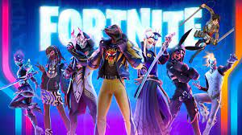

Juego para niños mayores de 7 años
¿Qué se trata Roblox?
Roblox es un sistema de creación de juegos en línea donde la mayoría del contenido es creado por creadores de juegos "aficionados" en el estudio de Roblox. Estos creadores de juegos pueden crear y publicar juegos para la comunidad utilizando herramientas simples.
Roblox es un juego multijugador gratuito online y social. Los usuarios pueden darle forma a sus mundos con piezas de diferentes tamaños y materiales. Es algo muy parecido a crear tus mundos y videojuegos con piezas de Lego, y luego puedes compartir tus creaciones con otros usuarios. Así, puede tanto dedicarte a jugar a los juegos creados por otros como a los tuyos propios.
Estos juegos que se crean no son todos iguales. Roblox es sólo la base sobre la que hacer las creaciones, pero estas pueden ser videojuegos totalmente diferentes con finalidades y mecánicas distintas. Puedes encontrar desde pruebas de parkour hasta aventuras con calabozos en los que tienes que ir matando monstruos, pasando incluso por juegos de supervivencia.
Juego para niños mayores de 10 años
Among Us es un juego multijugador en línea con clasificación PEGI 7+ que permite que un máximo de 10 jugadores asuman los roles de 'Compañero de tripulación' o 'Impostor'. El objetivo del juego es que los Crewmates identifiquen a los jugadores que son los impostores en el juego. Los impostores del juego tienen que sabotear en secreto las tareas del barco y matar a los miembros de la tripulación antes de que terminen sus tareas. Promueve la comunicación y el trabajo en equipo para lograr el objetivo final de encontrar al impostor. También presenta una emoción para los impostores, que intentan ocultar su identidad. Lo mismo ocurre con los Crewmates, que necesitan limpiar su nombre para que no sean eliminados y tengan que hacer sus tareas mientras su vida está en juego.
Juego para niños mayores de 8 años

Minecraft es un videojuego tipo sandbox, su traducción literal sería “caja de arena” y es lo que representa la experiencia de juego. Los jugadores pueden modelar el mundo a su gusto, destruir y construir, como si estuviesen jugando en una caja de arena. Esto presenta una gran ventaja frente a otros videojuegos para utilizarse en educación, ya que no tiene una historia lineal ni niveles que bloqueen el acceso a determinadas partes del juego. Desde un principio podemos hacer uso del máximo potencial del videojuego. Uno de los principales objetivos de Minecraft es precisamente este: ir descubriendo nuevos objetos, recetas y posibilidades con las que por ejemplo puedes sustituir tu espada de madera por una de hierro, y luego una de acero.
Juego para niños mayores de 13 años

Es un juego de tipo batalla real en el que compiten hasta cien jugadores en solitario, dúos, tríos o escuadrones. Los jugadores saltan de un autobús que cruza el mapa en el momento que deseen, y empiezan sin armas. Cuando aterrizan, deben buscar armas, objetos útiles y recursos, evitando que los maten mientras atacan a otros jugadores. La acción se divide en rondas con una duración determinada. Al acabar cada ronda, el área segura del mapa (la zona) se reduce en tamaño debido a una tormenta en ciernes; los jugadores que están fuera de esa área segura (la zona) reciben daño y pueden morir a causa de ella. Esto obliga a los jugadores a estar en espacios cada vez más cerrados y fomenta los combates entre jugadores. El último jugador o escuadrón vivo es el ganador de la partida.
Juego para niños de todas las edades
The Battle Cats es un juego de estrategia en tiempo real en el que los jugadores tendrán que proteger su base del ataque de las tropas invasoras, utilizando para ello un ejército de gatos. El sistema de juego de The Battle Cats es muy simple. El jugador tendrá su base situada a la derecha de un pequeño escenario en dos dimensiones, mientras que su enemigo estará a la izquierda. Cada segundo ambos bandos irán recibiendo dinero, con el que podrán hacer dos cosas: mejorar la base o comprar tropas. El objetivo será intentar destruir la base enemiga con las tropas que vayamos creando (gatos de todo tipo).